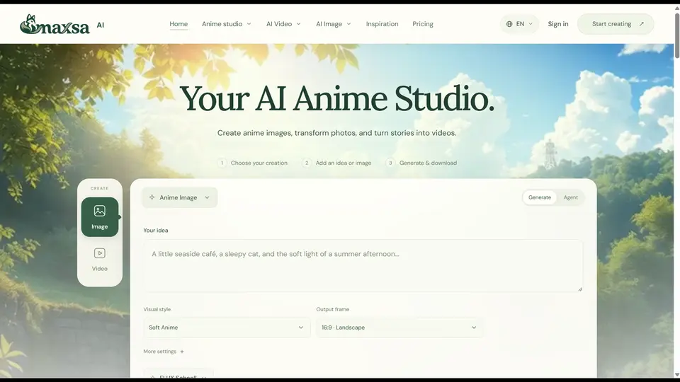
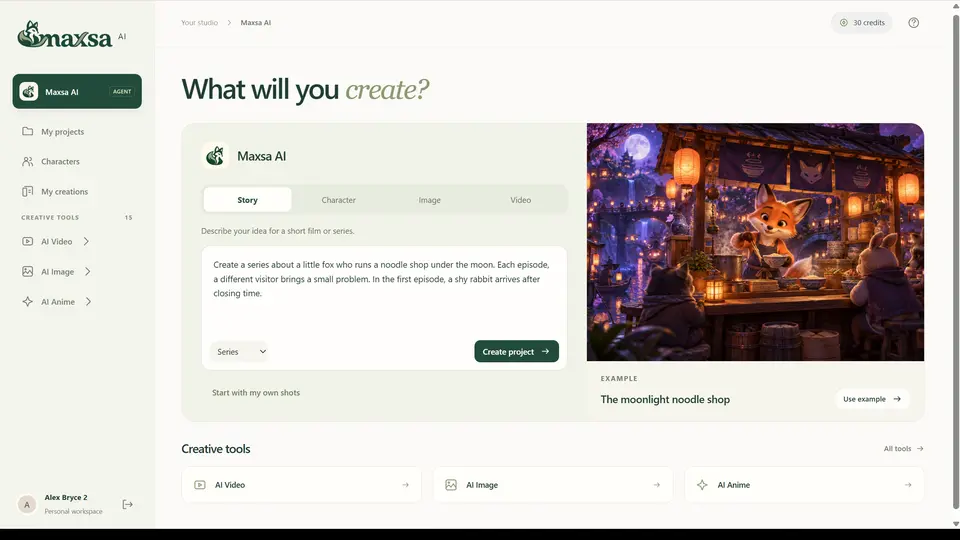

Maxsa AI launches an anime-first creative studio: AI agents turn a story idea into illustrated worlds
Maxsa AI launched an anime-first creative studio on October 10, 2026: AI agents carry a story idea through outlines, character design, and animated scenes, with credit-based pricing. Visual creation only for now — narration and lip-sync come later.
Maxsa AI announced an AI-powered creative studio on October 10, 2026, via a company press release: a dedicated platform for anime artwork, manga-inspired illustrations, cartoon characters, and animated stories. The pitch is specialization — instead of treating anime and cartoon styles as one mode among many in a general-purpose generator, the whole workspace is built around them.
The studio supports styles including soft anime, manga ink, chibi, 2D cartoons, and 3D cartoon aesthetics. Users start with a text description, upload a reference image, or pick from ready-made examples; a Photo to Cartoon tool turns existing photos into stylized illustrations, while the AI Anime Image Generator and AI Cartoon Generator produce characters, backgrounds, and illustrated scenes without traditional drawing skills.
An agent workflow, not just a generator
The centerpiece is an agent-powered workflow that carries a concept toward a structured visual narrative. Describe a series idea and the system helps draft story outlines, character descriptions, scene sequences, and the visual prompts to render them. Story to Video tools translate a brief — or an existing script — into animated scenes, and the platform generates short video clips from text and images. Before committing, creators can review a generation quote, then the system assembles a sequence of silent video shots.
The credit-based pricing is the whole business model: every generation has a visible credit cost up front, so you know what an image, transformation, or video will consume before it runs.

Character Studio and Comic Planner
Two purpose-built tools flank the generators. The Character Studio refines recurring characters through outfits, expressions, silhouettes, and personality traits — the raw material for a consistent cast. The Comic Planner handles narrative structure: panel descriptions, dialogue, and scene transitions before any visuals get made. A Kids Story Video Generator rounds out the set, tuned for age-appropriate vocabulary, narrative complexity, and emotional tone for younger audiences.

What’s missing, for now
The company is explicit about the limits of this release: it covers visual creation and story development only. Full narration, music production, and precise lip-sync editing are not part of the standard workflow — the animated sequences it produces are silent. That is an honest scope for a first launch, and it sets the bar for what the next updates need to add.
Why this matters
The launch fits a recognizable 2026 pattern: vertical AI tools that wrap one creative workflow end to end instead of offering a bigger generic model. Maxsa AI’s bet is that anime and cartoon creators need story plumbing — character bibles, panel plans, scene sequences — more than they need another image prompt box. No illustration or editing experience is required, and an inspiration gallery gives beginners example prompts to adapt.
All of this is per the company’s launch release; the platform’s output quality has not been independently tested. But the direction is clear enough: the race in creative AI is moving from “what can the model draw” to “who can turn a story into a production.” Maxsa AI just staked its claim on the anime corner of that map.
Sources: Maxsa AI launch announcement (EINPresswire, October 10, 2026); maxsa.ai.